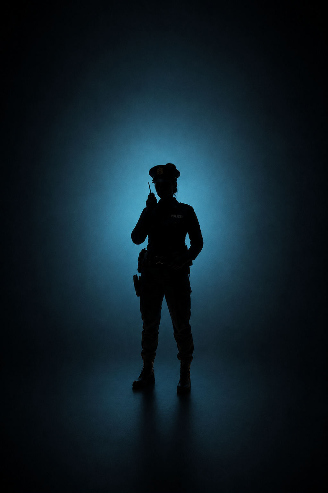

Rollenakte · Mord im Seehotel
Peter Lehmann
Intro Video — Gerne am Vorabend schauen, um optimal vorbereitet zu sein
Erst drücken, wenn der Moderator das Spiel offiziell gestartet hat.
Du erhältst das Passwort für jede Runde direkt vom Moderator.
Peter Lehmann
Hotelinhaber
Du bist seit Jahren der Steuerberater und engste Vertraute von Max Mey. Du kennst die Bücher des Seehotels bis ins letzte Detail — und du weißt, dass einige dieser Details nie hätten aufgeschrieben werden dürfen.
Max ist tot. Der Safe in seinem Büro ist offen. Was darin lag, könnte dich ruinieren. Du hast einen Manschettenknopf verloren, warst in der Sauna und hattest einen Streit mit Max. Keines dieser Dinge darf in dieser Reihenfolge ans Licht kommen.
Spielhinweise
- Reserviert und präzise — jedes Wort sitzt
- Reagiere auf Druck mit Gegenfragen, nie mit Erklärungen
- Zeige echte Trauer — sie ist dein bester Schutzschild
- Lügen sind erlaubt — Widersprüche sind dein Feind
- Den Streit mit Max gibst du erst in Runde 3 zu
Deine Beziehungen
 M.M.
M.M.
Max Mey
Das Oper.Er weiß, dass du mehr weißt als du sagst. Halte Abstand, vermeide offene Feindschaft.
Sophie Mey
Sie trauert aufrichtig und vertraut dir noch. Dieses Vertrauen ist dein wertvollstes Kapital.

J.P.Julia Petrovic
Ihre Ruhe wirkt einstudiert. Finde heraus, ob sie Zugang zu den Unterlagen hatte.
Travis Fezur
Er weiß, dass du mehr weißt als du sagst. Halte Abstand, vermeide offene Feindschaft.
Alex Mey
Er weiß, dass du mehr weißt als du sagst. Halte Abstand, vermeide offene Feindschaft.
Kai Krüger
Er weiß, dass du mehr weißt als du sagst. Halte Abstand, vermeide offene Feindschaft.
Cloe Simons
Das Opfer. Euer gemeinsames Geheimnis ist mit ihm gestorben — oder doch nicht?
← Seitwärts wischen →
Kleidungsstil
Konservativ und gepflegt — ein dunkler Anzug, gerne mit Krawatte. Du bist jemand, der Seriosität durch Äußerlichkeiten signalisiert. Nichts Auffälliges. Nichts, das ablenkt.
Wie du deine Rolle am besten spielst
Sprich langsam und wähle deine Worte mit Bedacht. Vermeide direkte Antworten, wo immer es geht. Reagiere auf Druck nicht mit Hektik, sondern mit einer Gegenfrage oder einem kontrollierten Schweigen. Du bist der ruhigste Mensch im Raum — auch wenn du das innerlich nicht bist.
Deine Ziele des Abends
1. Geheimhaltung: Die Finanzunterlagen aus dem Safe dürfen niemanden erreichen. Finde heraus, was nach Max' Tod damit passiert ist — und wer möglicherweise bereits Zugang hatte.
2. Ablenkung: Lenke den Verdacht auf andere. Julia Petrovic und Alex Mey haben beide Motive — nutze das geschickt, ohne es zu offensichtlich zu machen.
Spielregeln
Lügen NICHT erlaubt
Du darfst lügen und Fragen ausweichen. Achte aber auf Widersprüche — andere Spieler werden sie bemerken und nutzen.
Unter Druck
Wenn du unter Druck gerätst, stelle eine Gegenfrage oder rücke jemand anderen gezielt in den Mittelpunkt. Panik ist dein größter Feind.
Rundenlogik
Jeder nennt kurz seinen Namen Bringe andere in Erklärungsnot, bevor deine eigene Geschichte zu wackeln beginnt.
Lerne die anderen kennen. Stelle gezielte Fragen. Wer reagiert nervös, wenn der Safe oder die Finanzen erwähnt werden?
Das Spiel wird intensiver. Neue Hinweise verändern die Lage. Bringe andere in Erklärungsnot, bevor deine eigene Geschichte zu wackeln beginnt.
Geheimnisse kommen ans Licht. Entscheide jetzt: Gestehst du kontrolliert ein, was sich nicht mehr verbergen lässt — oder lässt du jemand anderen ins Messer laufen?
Der Täter wird enttarnt, alle Geheimnisse aufgedeckt. Mach dich bereit für das Finale.
Zwei kleine Dinge vorab
1. Bitte lade dein Handy vor Spielstart auf. Du wirst es benötigen, um dich zu orientieren und deine Rollenbeschreibungen abrufen zu können.
2. Aktiviere während der Runden den Flugmodus, um ein ungestörtes Spielerlebnis zu ermöglichen.
Euer Moderator hat das Startsignal gegeben?
Runde 1 öffnen